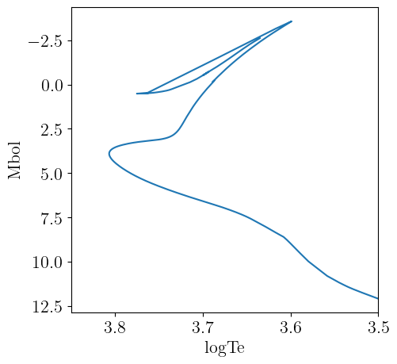
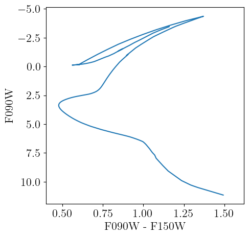

BaSTIv2
Here we describe the interface we provide to the updated BaSTI stellar models presented in [16, 20–22]. BaSTIv2 specific code is housed in the BaSTIv2 submodule, which can be accessed as
using StellarTracks.BaSTIv2 # load all exported methods
using StellarTracks.BaSTIv2: BaSTIv2Library, X, Y, Z # load specific methodsData Acquisition
The tracks will be downloaded automatically using DataDeps.jl the first time you try to access them. The main access point we provide is BaSTIv2Library, which will load and make available a set of stellar models corresponding to a specific chemical mixture and set of input physics. The first time you call this method, you will be prompted to download the required data files. The total data volume is ~110 MB. Information on customizing the install location is available here. The data can be uninstalled by running using DataDeps; rm(datadep"BaSTIv2"; recursive=true). With all the tracks available, we are able to perform operations like interpolating isochrones at any age and metallicity within the BaSTIv2 parameter space.
Grid Properties
The BaSTIv2 model grid contains models for the following iron abundances:
println(BaSTIv2.feh_grid)Float32[-3.2, -2.5, -2.2, -1.9, -1.7, -1.55, -1.4, -1.3, -1.2, -1.05, -0.9, -0.7, -0.6, -0.4, -0.3, -0.2, -0.1, 0.06, 0.15, 0.3, 0.45]This is a superset of all available iron abundances; not all combinations of physics and chemistry will have all these iron abundances available. In particular, the α-enhanced models with [α/Fe]=0.4 presently have a limited number of iron abundances available.
The BaSTIv2 grid includes models with scaled-solar abundance patterns, α-enhanced models with an average [α/Fe]=0.4 (presented in Pietrinferni et al. [20]), and α-depleted models with [α/Fe]=-0.2 (presented in Pietrinferni et al. [22]. For these models, the abundances of the α elements O, Ne, Mg, Si, S, Ar, Ca, and Ti have been changed relative to Fe. These α-enhanced models are useful for modeling low-metallicity stars that formed prior to significant iron enrichment from type Ia supernovae. These stars are most common in the Galactic halo and low-mass dwarf galaxies. Note that the conversion between metal mass fraction $Z$ and logarithmic metal abundance [M/H] is the same for the scaled-solar models as for the α-enhanced models, however the iron abundance [Fe/H] is not the same as [M/H] – see Table 1 of Pietrinferni et al. [20] and Pietrinferni et al. [22] for the full elemental abundance tables.
For scaled-solar abundance patterns, models are available with different physics models varying convective overshooting during central H-burning and atomic diffusion. So-called "canonical" models do not including overshooting, while "non-canonical" models do include a convective overshooting treatment (see section 3 of Pietrinferni et al. [13]). Inclusion of convective overshooting during central H-burning mainly changes the main sequence turn-off morphology and generally results in better fits to simple stellar populations like globular clusters. For methods in this module that take a canonical::Bool argument, a value of canonical=true indicates you want to use the "canonical" stellar models, while a value of canonical=false means you want to use the "non-canonical" models that include convective core overshooting. Similarly, setting an argument diffusion::Bool=true indicates you wish to use the models with atomic diffusion. For scaled-solar abundance patterns, models with different Reimers mass loss parameters η are also available.
The α-depleted [22] and α-enhanced [20] models are only available with overshooting and diffusion (canonical=false, diffusion=true, with η=0.3). Additional α-enhanced models with enhanced primordial helium abundances are also available (yp = 0.247 (fiducial), 0.275, 0.3, 0.32).
Not all combinations of canonical, diffusion, α-element abundance, primordial helium abundance yp, and Reimers mass loss parameter η are valid. The table below summarizes the available combinations of parameters.
| [α/Fe] | canonical | diffusion | yp | η |
|---|---|---|---|---|
| -0.2 | false | true | 0.247 | 0.3 |
| 0.0 | false | true | 0.247 | 0.3 |
| 0.0 | false | false | 0.247 | 0.0 |
| 0.0 | false | false | 0.247 | 0.3 |
| 0.0 | true | false | 0.247 | 0.0 |
| 0.4 | false | true | 0.247 | 0.3 |
| 0.4 | false | true | 0.275 | 0.3 |
| 0.4 | false | true | 0.300 | 0.3 |
| 0.4 | false | true | 0.320 | 0.3 |
As setting up these arguments can be arduous, we have attempted to provide useful error messages when an invalid combination of arguments is requested.
Examples
First we load the scaled-solar models ([α/Fe] = 0.0) with convective core overshooting (canonical = false), diffusion (diffusion = true), primordial helium abundance yp = 0.247, and Reimers mass loss parameter η = 0.3. These models will be downloaded via DataDeps.jl if not already available.
using StellarTracks.BaSTIv2
p = BaSTIv2Library(0.0, false, true, 0.247, 0.3)Structure of interpolants for the updated BaSTI library of non-canonical stellar tracks with diffusion, [α/Fe]=0.0, Y_p=0.247, η=0.3. Valid range of metallicities is [Fe/H] = (-3.2f0, 0.3f0), [M/H] = (-3.2f0, 0.3f0).Now we use the BaSTIv2Library to interpolate an isochrone at log10(age [yr]) = 10.05 and logarithmic metallicity [M/H] = -1.234. The isochrone is returned as a NamedTuple.
iso = isochrone(p, 10.05, -1.234)(eep = [61, 62, 63, 64, 65, 66, 67, 68, 69, 70 … 2090, 2091, 2092, 2093, 2094, 2095, 2096, 2097, 2098, 2099], m_ini = [0.10141200294479978, 0.10400175133557023, 0.10612021084671266, 0.10788377326789952, 0.10939046499803125, 0.1107054358527729, 0.11187247051101407, 0.11292198328632037, 0.1138759274637415, 0.11475057719764335 … 0.8388500161327563, 0.8388514835991744, 0.8388527555622848, 0.838853986994255, 0.8388553996242906, 0.8388566310562608, 0.8388578827538011, 0.8388593502202191, 0.8388606221833295, 0.8388619954742906], logTe = [3.4995348496602308, 3.505799302687155, 3.5107926603855955, 3.5148027321575497, 3.518098911935267, 3.5208650442900034, 3.5232256218697873, 3.5252648207396486, 3.527044200577438, 3.5286099859779276 … 3.6481296247255517, 3.6470421356315996, 3.645855364273411, 3.644495257838134, 3.6431124109790103, 3.641619309805464, 3.6399786370497886, 3.638195800070752, 3.6366113941670477, 3.634926780923451], Mbol = [12.090678483672093, 11.976064014442818, 11.88349143912259, 11.808758543914882, 11.746868456673544, 11.694383906191069, 11.649027861471113, 11.609286116561268, 11.57407861620697, 11.542594203172046 … -2.2169971064267133, -2.2529323079706933, -2.290577094905382, -2.3317053491782995, -2.374937914199835, -2.419144524002403, -2.4658168685412227, -2.5155906570021025, -2.5647683608800422, -2.6151653283806806], logg = [5.337107552509478, 5.327022274828704, 5.3185604560796484, 5.311748884939152, 5.306124790928806, 5.301343487531629, 5.297183970255864, 5.2935083091843245, 5.290224894359851, 5.2872617710541805 … 1.0542971333672706, 1.0358532629176065, 1.0164527449998408, 0.9951096663184931, 0.9728993566850098, 0.949962423464147, 0.9254975882166108, 0.8992640723271395, 0.8735201240947186, 0.846849846690909], logL = [-2.94027150218768, -2.8944258070024445, -2.857396540363079, -2.827503318383824, -2.8027473635959175, -2.7817536063454456, -2.763611235187527, -2.7477143808209434, -2.7336314913054593, -2.7210379311315043 … 2.7827987662767546, 2.797172879319259, 2.8122307626218745, 2.8286819689636093, 2.845975026443484, 2.8636577504731386, 2.882326654910102, 2.9022362036730187, 2.9219072051155663, 2.9420660874832536])The NamedTuple returned by isochrone can be converted to table types, like TypedTables.Table to simplify further use.
using TypedTables: Table
Table(iso)Table with 6 columns and 2039 rows:
eep m_ini logTe Mbol logg logL
┌───────────────────────────────────────────────────
1 │ 61 0.101412 3.49953 12.0907 5.33711 -2.94027
2 │ 62 0.104002 3.5058 11.9761 5.32702 -2.89443
3 │ 63 0.10612 3.51079 11.8835 5.31856 -2.8574
4 │ 64 0.107884 3.5148 11.8088 5.31175 -2.8275
5 │ 65 0.10939 3.5181 11.7469 5.30612 -2.80275
6 │ 66 0.110705 3.52087 11.6944 5.30134 -2.78175
7 │ 67 0.111872 3.52323 11.649 5.29718 -2.76361
8 │ 68 0.112922 3.52526 11.6093 5.29351 -2.74771
9 │ 69 0.113876 3.52704 11.5741 5.29022 -2.73363
10 │ 70 0.114751 3.52861 11.5426 5.28726 -2.72104
11 │ 71 0.115558 3.53 11.5142 5.28457 -2.70969
12 │ 72 0.116309 3.53123 11.4885 5.28211 -2.69942
13 │ 73 0.11701 3.53233 11.4651 5.27985 -2.69005
14 │ 74 0.117668 3.53332 11.4437 5.27776 -2.68149
15 │ 75 0.118288 3.53421 11.424 5.27583 -2.67362
16 │ 76 0.118874 3.53502 11.4059 5.27404 -2.66637
17 │ 77 0.11943 3.53574 11.3892 5.27238 -2.65967
⋮ │ ⋮ ⋮ ⋮ ⋮ ⋮ ⋮The theoretical isochrone is plotted below.
We can load a grid of bolometric corrections from BolometricCorrections.jl to add observational magnitudes to the theoretical isochrone. In this example, we use the MIST bolometric correction grid, which offers bolometric corrections for varying metallicities ([M/H]) and reddening values ($A_V$).
Because the solar metallicity calibrations of BaSTIv2 and MIST are not exactly the same, the protostellar metal mass fraction $Z$ that corresponds to a given [M/H] is not the same between the two libraries. The isochrone interface will convert the given [M/H], which is assumed to be the desired metallicity in the stellar track library, to its corresponding metal mass fraction, and then convert from the metal mass fraction to the correct [M/H] for the assumed chemical model of the bolometric correction grid. For non-solar-scaled BaSTIv2 models, we will try to use the same α-abundance for the bolometric corrections if they are available. If BCs with the correct α-abundance are not available in the bolometric correction grid you supply, we will instead match the metal mass fractions $Z$ between the stellar tracks and the bolometric corrections, following the canonical wisdom that stellar tracks and isochrones with altered α abundances can be well approximated by scaled-solar models with the same total metallicity (see, e.g., section 3.2 of [20]).
This method returns a TypedTables.Table that contains the information from both sources. Here we evaluate an isochrone with log10(age [yr]) = 10.05, [M/H] = -1.234, and $A_v = 0.02$ mag.
using BolometricCorrections.MIST: MISTBCGrid
m = MISTBCGrid("JWST")
iso = isochrone(p, m, 10.05, -1.234, 0.02)Table with 35 columns and 2039 rows:
eep m_ini logTe Mbol logg logL F070W F090W ⋯
┌────────────────────────────────────────────────────────────────────────
1 │ 61 0.101412 3.49953 12.0907 5.33711 -2.94027 12.4061 11.1615 ⋯
2 │ 62 0.104002 3.5058 11.9761 5.32702 -2.89443 12.254 11.0631 ⋯
3 │ 63 0.10612 3.51079 11.8835 5.31856 -2.8574 12.1307 10.974 ⋯
4 │ 64 0.107884 3.5148 11.8088 5.31175 -2.8275 12.031 10.902 ⋯
5 │ 65 0.10939 3.5181 11.7469 5.30612 -2.80275 11.9484 10.8424 ⋯
6 │ 66 0.110705 3.52087 11.6944 5.30134 -2.78175 11.8784 10.7919 ⋯
7 │ 67 0.111872 3.52323 11.649 5.29718 -2.76361 11.818 10.7482 ⋯
8 │ 68 0.112922 3.52526 11.6093 5.29351 -2.74771 11.7652 10.7099 ⋯
9 │ 69 0.113876 3.52704 11.5741 5.29022 -2.73363 11.7186 10.6759 ⋯
10 │ 70 0.114751 3.52861 11.5426 5.28726 -2.72104 11.677 10.6456 ⋯
11 │ 71 0.115558 3.53 11.5142 5.28457 -2.70969 11.6396 10.6182 ⋯
12 │ 72 0.116309 3.53123 11.4885 5.28211 -2.69942 11.6059 10.5934 ⋯
13 │ 73 0.11701 3.53233 11.4651 5.27985 -2.69005 11.5753 10.5708 ⋯
14 │ 74 0.117668 3.53332 11.4437 5.27776 -2.68149 11.5474 10.5501 ⋯
15 │ 75 0.118288 3.53421 11.424 5.27583 -2.67362 11.5218 10.5311 ⋯
16 │ 76 0.118874 3.53502 11.4059 5.27404 -2.66637 11.4984 10.5135 ⋯
17 │ 77 0.11943 3.53574 11.3892 5.27238 -2.65967 11.4769 10.4973 ⋯
⋮ │ ⋮ ⋮ ⋮ ⋮ ⋮ ⋮ ⋮ ⋮ ⋱All available columns in the isochrone can be obtained with TypedTables.columnnames.
using TypedTables: columnnames
columnnames(iso)(:eep, :m_ini, :logTe, :Mbol, :logg, :logL, :F070W, :F090W, :F115W, :F140M, :F150W2, :F150W, :F162M, :F164N, :F182M, :F187N, :F200W, :F210M, :F212N, :F250M, :F277W, :F300M, :F322W2, :F323N, :F335M, :F356W, :F360M, :F405N, :F410M, :F430M, :F444W, :F460M, :F466N, :F470N, :F480M)A color-magnitude diagram constructed from the isochrone is plotted below.
Chemistry API
We provide the StellarTracks.BaSTIv2.BaSTIv2Chemistry type that follows the chemistry API defined in BolometricCorrections.jl to access information on the chemical mixture assumed for the BaSTIv2 models.
StellarTracks.BaSTIv2.BaSTIv2Chemistry — TypeBaSTIv2Chemistry(α_fe::Number, yp::Number)Returns a struct representing the BaSTIv2 chemical mixture model with [α/Fe] = α_fe and primordial helium abundance yp. These BaSTI models, presented in Hidalgo et al. [16], Pietrinferni et al. [20], Salaris et al. [21] and Pietrinferni et al. [22], include solar-scaled chemical compositions, α-enhanced compositions with [α/Fe] ≈ 0.4, and α-depleted compositions with [α/Fe] ≈ -0.2.
The solar protostellar chemical mixture for these models was calibrated to reproduce solar photospheric observations via a forward modeling approach (see section 3 of Hidalgo et al. [16]). Most solar photospheric abundances are taken from Caffau et al. [23].
As the BaSTIv2 grid was run with uniform [Fe/H] values but differing [α/Fe], the metal mass fraction $Z$ and the logarithmic metal abundance [M/H] are not uniform for every [α/Fe] in the grid. We therefore need to know [α/Fe] so that we can convert the [Fe/H] values to [M/H] and $Z$. The α-enhanced library also includes models with enhanced primordial helium abundance (yp here), so we require that information as well.
For the [α/Fe] = 0.4 models presented in [Pietrinferni2021(@citet) and the [α/Fe] = -0.2 models presented in Pietrinferni et al. [22], the α elements O, Ne, Mg, Si, S, Ca, and Ti have all been uniformly modified with respect to the Fe abundance relative to the Caffau et al. [23] heavy element distribution. As C and N are not changed, [M/H] = [Fe/H] + 0.75 * [α/Fe]; see, e.g., Equation 4 of Vazdekis et al. [17].
julia> using StellarTracks.BaSTIv2: BaSTIv2Chemistry, X, Y, Z, X_phot, Y_phot, Z_phot, MH;
julia> chem = BaSTIv2Chemistry(0.0, 0.247);
julia> X(chem) + Y(chem) + Z(chem) ≈ 1 # solar protostellar values
true
julia> X_phot(chem) + Y_phot(chem) + Z_phot(chem) ≈ 1 # solar photospheric values
true
julia> isapprox(MH(chem, Z_phot(chem) * 0.1), -1; atol=0.01)
true
julia> isapprox(Z(chem, -1), Z_phot(chem) * 0.1; rtol=0.02)
trueNote that in our conversions between $Z$ and [M/H], remembering that MH = log10(Z/X) - log10(Z⊙/X⊙), we use the photospheric solar values for Z⊙ and X⊙ (these are defined in section 3 of Hidalgo et al. [16]). This reproduces the relation between Z and [M/H] defined in Table 2 of Hidalgo et al. [16].
Library API
StellarTracks.BaSTIv2.BaSTIv2Library — TypeBaSTIv2Library(α_fe::Number=0, canonical::Bool=false, diffusion::Bool=true,
yp::Number=0.247, η::Number=0.3)BaSTIv2Library implements the AbstractTrackLibrary interface for the updated BaSTI stellar evolution models presented in [16, 20–22].
Optional Arguments
α_fe::Number = 0: [α/Fe] of stellar model.canonical::Bool = false: Whether to use models with convective overshooting (true) or without (false).diffusion::Bool = true: Whether to use models with atomic diffusion (true) or without (false).yp::Number = 0.247: Primordial helium abundance assumed for stellar model.η::Number = 0.3: Reimers mass loss parameter used to calculate the stellar model.
If you construct an instance as p = BaSTIv2Library(0.0, false), it is callable as p(mh::Number, M::Number) which returns an InterpolatedTrack that interpolates between tracks to a specific metallicity ([M/H]) and initial stellar mass (M).
This type also supports isochrone construction (see isochrone).
julia> p = BaSTIv2Library(0.0, false, true, 0.247, 0.3)
Structure of interpolants for the updated BaSTI library of non-canonical stellar tracks with diffusion, [α/Fe]=0.0, Y_p=0.247, η=0.3. Valid range of metallicities is [Fe/H] = (-3.2f0, 0.3f0), [M/H] = (-3.2f0, 0.3f0).
julia> isochrone(p, 10.05, -2.01) isa NamedTuple
true
julia> p(-2.05, 1.05)
InterpolatedTrack with M_ini=1.05, MH=-2.05, Z=0.00013941349859095735, Y=0.2471826256034804, X=0.7526779608979287.StellarTracks.isochrone — Methodisochrone(p::BaSTIv2Library, logAge::Number, mh::Number)Interpolates properties of the stellar tracks in the library at the requested logarithmic age (logAge = log10(age [yr])) and logarithmic metallicity [M/H] = mh. Returns a NamedTuple containing the properties listed below:
eep: Equivalent evolutionary points.m_ini: Initial stellar masses, in units of solar masses.logTe: Base-10 logarithm of the effective temperature [K] of the stellar model.Mbol: Bolometric luminosity of the stellar model.logg: Surface gravity of the stellar model.
The full library is principally a set of BaSTIv2TrackSets, with one track set per unique chemical composition. We do not presently offer interpolation as a function of [α/Fe] or between the canonical and non-canonical models, or between the models with and without diffusion, so the individual track sets in the library vary only in total metallicity (i.e., $Z$).
Track Set API
StellarTracks.BaSTIv2.BaSTIv2TrackSet — TypeBaSTIv2TrackSet(feh::Number, α_fe::Number=0, canonical::Bool=false,
diffusion::Bool=true, yp::Number=0.247, η::Number=0.3)BaSTIv2TrackSet implements the AbstractTrackSet interface for the updated BaSTI stellar evolution library [16, 20–22].
Arguments
feh::Number: [Fe/H] of stellar model
Optional Arguments
α_fe::Number = 0: [α/Fe] of stellar model.canonical::Bool = false: Whether to use models with convective overshooting (true) or without (false).diffusion::Bool = true: Whether to use models with atomic diffusion (true) or without (false).yp::Number = 0.247: Primordial helium abundance assumed for stellar model.η::Number = 0.3: Reimers mass loss parameter used to calculate the stellar model.
julia> ts = StellarTracks.BaSTIv2.BaSTIv2TrackSet(-2.2, 0.0, false, true, 0.247, 0.3)
Non-canonical BaSTIv2TrackSet with diffusion, [M/H]=-2.2, [Fe/H]=-2.2, [α/Fe]=0.0, Z=9.870951724808943e-5, Y=0.24712930338792122, Y_p=0.247, η=0.3, 2099 EEPs and 56 initial stellar mass points.
julia> ts(1.01) # Interpolate track at new initial mass
Non-canonical BaSTIv2Track with diffusion, M_ini=1.01, [M/H]=-2.2, [Fe/H]=-2.2, [α/Fe]=0.0, Z=9.870951724808943e-5, Y=0.24712930338792122, X=0.7527719870948307, Y_p=0.247, η=0.3.
julia> isochrone(ts, 10.0) isa NamedTuple # Interpolate isochrone at `log10(age [yr]) = 10`
trueIndividual Tracks API
StellarTracks.BaSTIv2.BaSTIv2Track — TypeBaSTIv2Track(feh::Number, mass::Number, α_fe::Number, canonical::Bool, diffusion::Bool, yp::Number, η::Number)BaSTIv2Track implements the AbstractTrack interface for the updated BaSTI stellar evolution library [16, 20–22].
Note that due to the organization of the BaSTIv2 data files, this method requires constructing a BaSTIv2TrackSet and is therefore not efficient if your aim is to construct multiple tracks with the same properties but different masses. In this case, you should construct a BaSTIv2TrackSet and call it with the masses you want, e.g., ts = BaSTIv2TrackSet(-2.2, 0.0, true, true, 0.247, 0.3); ts.([0.61, 0.82]).
Arguments
feh::Number: [Fe/H] of stellar model.mass::Number: Initial stellar mass of stellar model in solar masses.α_fe::Number: [α/Fe] of stellar model.canonical::Bool: Whether to use models with convective overshooting (true) or without (false).diffusion::Bool: Whether to use models with atomic diffusion (true) or without (false).yp::Number: Primordial helium abundance assumed for stellar model.η::Number: Reimers mass loss parameter used to calculate the stellar model.
Note that this function takes the input metallicity as [Fe/H], which is not equal to [M/H] when considering models with [α/Fe] != 0 α_fe != 0.
julia> track = StellarTracks.BaSTIv2.BaSTIv2Track(-2.2, 0.81, 0.0, false, true, 0.247, 0.3)
Non-canonical BaSTIv2Track with diffusion, M_ini=0.81, [M/H]=-2.2, [Fe/H]=-2.2, [α/Fe]=0.0, Z=9.870952533235687e-5, Y=0.24712930947818537, X=0.7527719809964823, Y_p=0.247, η=0.3.
julia> track(9.0) # interpolate track at log10(age [yr]) = 9
(log_L = -0.1362482951194984, log_Teff = 3.801176847293261, log_g = 4.642115349406555)Acknowledgements
We would like to thank Alessandro Savino for his assistance acquiring and working with the updated BaSTI tracks.
BaSTIv2 References
This page cites the following references:
- [13]
- A. Pietrinferni, S. Cassisi, M. Salaris and F. Castelli. A Large Stellar Evolution Database for Population Synthesis Studies. I. Scaled Solar Models and Isochrones. ApJ 612, 168–190 (2004).
- [16]
- S. L. Hidalgo, A. Pietrinferni, S. Cassisi, M. Salaris, A. Mucciarelli, A. Savino, A. Aparicio, V. S. Aguirre and K. Verma. The Updated BaSTI Stellar Evolution Models and Isochrones. I. Solar-scaled Calculations. ApJ 856, 125 (2018).
- [17]
- A. Vazdekis, P. Coelho, S. Cassisi, E. Ricciardelli, J. Falcón-Barroso, P. Sánchez-Blázquez, F. La Barbera, M. Beasley and A. Pietrinferni. Evolutionary stellar population synthesis with MILES - II. Scaled-solar and α-enhanced models. MNRAS 449, 1177–1214 (2015), arXiv:1504.08032 [astro-ph.GA].
- [20]
- A. Pietrinferni, S. Hidalgo, S. Cassisi, M. Salaris, A. Savino, A. Mucciarelli, K. Verma, V. Silva Aguirre, A. Aparicio and J. W. Ferguson. Updated BaSTI Stellar Evolution Models and Isochrones. II. α-enhanced Calculations. ApJ 908, 102 (2021). Accessed on Apr 28, 2024. ADS Bibcode: 2021ApJ...908..102P.
- [21]
- M. Salaris, S. Cassisi, A. Pietrinferni and S. Hidalgo. The updated BASTI stellar evolution models and isochrones - III. White dwarfs. MNRAS 509, 5197–5208 (2022). Accessed on Apr 28, 2024. ADS Bibcode: 2022MNRAS.509.5197S.
- [22]
- A. Pietrinferni, M. Salaris, S. Cassisi, A. Savino, A. Mucciarelli, D. Hyder and S. Hidalgo. The updated BaSTI stellar evolution models and isochrones - IV. α-Depleted calculations. MNRAS 527, 2065–2070 (2024). Accessed on Apr 28, 2024. ADS Bibcode: 2024MNRAS.527.2065P.
- [23]
- E. Caffau, H.-G. Ludwig, M. Steffen, B. Freytag and P. Bonifacio. Solar Chemical Abundances Determined with a CO5BOLD 3D Model Atmosphere. Solar Physics 268, 255–269 (2011).